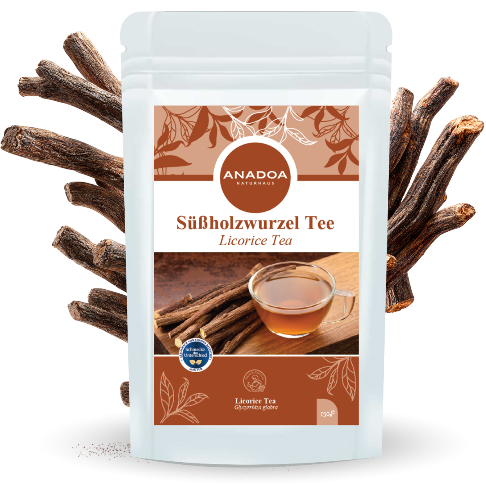

Süßholzwurzel Tee (Meyan Kökü) – Das Wüstenelixier
In den trockenen, heißen Regionen Südostanatoliens (Gaziantep, Şanlıurfa) ist ein Getränk im Sommer allgegenwärtig: Ein eiskalter, tiefschwarzer Sud aus Meyan Kökü (Süßholzwurzel). Traditionelle Straßenverkäufer ("Meyancı") tragen riesige, kunstvolle Messingkessel auf dem Rücken und schenken dieses legendäre Getränk aus, um die Menschen vor Dehydrierung und Magenkrämpfen zu bewahren.
Der Echte Süßholzstrauch (Glycyrrhiza glabra) ist eine der ältesten Heilpflanzen der Menschheit, erwähnt bereits in ägyptischen Papyri und in der traditionellen chinesischen Medizin (TCM). Für den Premium Tee von Anadoa Naturhaus verwenden wir ausschließlich die tief geernteten, mehrjährigen Wurzeln der Pflanze. Diese Wurzeln werden geschält und schonend getrocknet. Sie enthalten eine Substanz, die das Geschmacksempfinden des Menschen massiv manipuliert und gleichzeitig eine enorme, entzündungshemmende Heilkraft besitzt.
Glycyrrhizin - 50-mal süßer als Zucker dank Süßholzwurzel Tee
Das absolute Geheimnis des Süßholzes ist ein sekundärer Pflanzenstoff namens Glycyrrhizin. Diese Verbindung bindet sich direkt an die Süß-Rezeptoren auf der Zunge und ist im direkten Vergleich (je nach Extraktion) etwa 50-mal süßer als gewöhnlicher weißer Haushaltszucker (Saccharose) – jedoch völlig ohne dessen Kalorien und ohne eine schädliche Insulinausschüttung auszulösen!
Dies macht Süßholzwurzel zu einem genialen Werkzeug für Diabetiker oder Menschen, die auf Industriezucker verzichten wollen. Sie können ein oder zwei Wurzelstücke in jeden anderen, eher bitteren Kräutertee (wie Löwenzahn oder Zahter) geben, und der gesamte Tee erhält sofort eine tiefe, langanhaltende und völlig natürliche Süße mit einer ganz feinen, lakritzartigen Anis-Note im Abgang.
Süßholzwurzel Tee als ultimative Schutz für die Magenschleimhaut
Die wichtigste phytotherapeutische Anwendung des Süßholzes betrifft den Magen. Glycyrrhizin besitzt extrem starke antiphlogistische (entzündungshemmende) Eigenschaften. Klinische Studien zeigen, dass es die Produktion von körpereigenem, zähem Magenschleim (Mucus) stimuliert.
Dieser Schleim legt sich wie eine dicke Schutzbarriere über die Innenwand des Magens. Bei starken Sodbrennen (Reflux), Magenschleimhautentzündungen (Gastritis) oder sogar zur Begleittherapie von leichten Magengeschwüren ist Süßholzwurzeltee das Mittel der Wahl. Es neutralisiert nicht nur die aggressive Säure, sondern fördert aktiv die Abheilung der geschädigten Gewebezellen im Magen.
Expektorans - Schleimlösung bei festsitzendem Husten dank Süßholzwurzel Tee
Während Eibischblüten bei trockenem Reizhusten helfen, ist die Süßholzwurzel der Spezialist für das genaue Gegenteil: Den festsitzenden, produktiven Husten. Sie wirkt stark sekretolytisch (schleimverflüssigend) und expektorierend (auswurffördernd).
Wenn Sie an einer massiven Bronchitis mit extrem zähem, festsitzendem Schleim in den Atemwegen leiden, hilft ein heißer Aufguss aus Süßholzwurzel, diesen zähen Schleim zu verflüssigen, sodass er endlich leichter abgehustet werden kann. Zudem lindert das Glycyrrhizin die oft damit einhergehende Entzündung der Bronchialäste.
Die ideale Zubereitung und Anwendung von Süßholzwurzel Tee
Da Süßholz eine harte, holzige Wurzel ist, reicht einfaches Übergießen mit heißem Wasser oft nicht aus, um die dichten Fasern aufzubrechen und das süße Glycyrrhizin zu extrahieren.
Die optimale Zubereitung (Dekoktion): Geben Sie 1 bis 1,5 Teelöffel der geschnittenen Wurzeln in einen kleinen Topf mit kaltem Wasser (ca. 250ml). Bringen Sie das Wasser zum Kochen und lassen Sie die Wurzeln bei mittlerer Hitze zugedeckt für gute 5 bis 10 Minuten leicht köcheln. Der Sud wird sich gelblich-braun färben. Gießen Sie ihn durch ein feines Sieb. Der Geschmack ist intensiv, unglaublich süß und lakritzartig. Zusatz-Tipp: Kauen Sie nach dem Essen einfach auf einem trockenen Stück Süßholzwurzel! Es pflegt Zähne und Zahnfleisch (antibakteriell) und verhindert Heißhunger auf Süßigkeiten.
Warum der Süßholzwurzel Tee von Anadoa die beste Wahl ist
Viele im Handel erhältliche Lakritz-Produkte oder "Süßholz-Bonbons" bestehen zum Großteil aus purem Industriezucker, künstlichem Salmiak und nur verschwindend geringen Mengen an echtem Süßholzextrakt.
Bei Anadoa Naturhaus erhalten Sie die 100 % reine, geschälte und grob geschnittene Süßholzwurzel aus den besten Erntegebieten Anatoliens. Nichts ist zugesetzt, nichts ist verarbeitet. Erleben Sie die absolute, unverdünnte Süße und Heilkraft der Natur, genau so, wie sie in den anatolischen Wüsten seit Jahrtausenden geerntet wird.
Häufig gestellte Fragen (FAQ)
Schmeckt der Tee wie Lakritze?
Ja, Süßholzwurzel ist die botanische Basis für Lakritze. Der Tee schmeckt extrem intensiv süß mit einer sehr deutlichen, warmen Lakritz- und leichten Anisnote. Wenn Sie Lakritze hassen, wird Ihnen dieser Tee pur vermutlich nicht schmecken (Sie können ihn dann aber als winzige Prise zum Süßen anderer Tees verwenden).
Erhöht Süßholzwurzel den
Blutdruck?
WICHTIG: Ja! Der Wirkstoff Glycyrrhizin greift in den Mineralstoffwechsel der Nieren ein. Wer täglich große Mengen (über 3 Tassen am Tag) starken Süßholztee trinkt, kann seinen Kaliumspiegel senken und den Blutdruck deutlich erhöhen. Personen mit diagnostiziertem Bluthochdruck (Hypertonie) dürfen Süßholz nur in extrem kleinen Mengen konsumieren.
Dürfen Schwangere Süßholztee
trinken?
Nein. Hohe Mengen an Glycyrrhizin in der Schwangerschaft stehen im Verdacht, sich negativ auf die Entwicklung des Fötus (und den mütterlichen Blutdruck) auszuwirken. Bitte in der Schwangerschaft meiden.
Wie lange darf ich den Tee als
Kur gegen Magenschmerzen trinken?
Um die Risiken für den Blutdruck und Kaliumverlust zu minimieren, sollte eine Intensiv-Kur (täglich 1-2 Tassen) nicht länger als 4 bis maximal 6 Wochen andauern.
Hilft Süßholz wirklich bei
Heißhunger auf Schokolade?
Extrem gut! Die massive, aber völlig kalorienfreie Süße signalisiert dem Gehirn 'Zucker', ohne dass Insulin ausgeschüttet wird. Ein kleines Stück der Wurzel zu kauen, stoppt den abendlichen 'Sugar-Cravings' (Zucker-Heißhunger) fast augenblicklich.